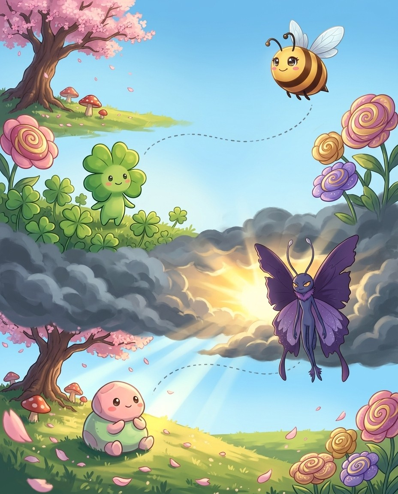
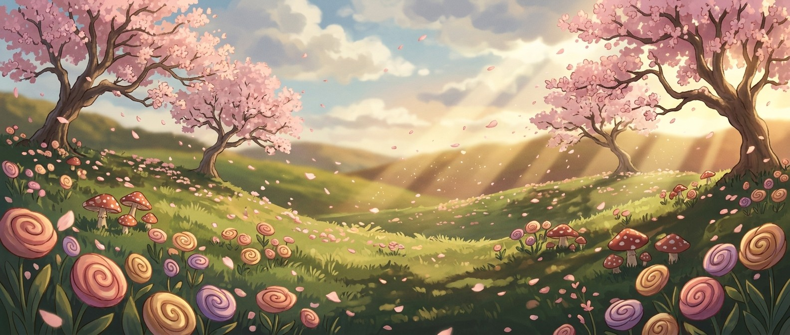

Greek graphein = to write. One root unlocks three suffix families: -graph (the instrument/method), -gram (the written thing), and -graphy (the art or study of writing something).
The pro move
CHOREOGRAPHY
Say it. kaw-ree-AH-gruh-fee
Spell it. C · H · O · R · E · O · G · R · A · P · H · Y
Greek graphein = to write. When you see -graph or -gram, ask: what is being written or recorded? Telegraph = write from far. Monograph = written about one thing. Autograph = written by oneself.
-graph = The Instrument/Method
Seismograph = records earthquakes. Cardiograph = records heart. Photograph = photo (light) + graph = written by light. Lithograph = lithos (stone) = printed from stone.
Vex alert
AUTO + BIO + GRAPHY: a self (auto) life (bio) writing (graphy)
Sound trap
topography sounds like typography — at the mic, always ask for the meaning.
Check yourself
Cover the page and spell seismograph · cardiograph · lithograph out loud. Miss one? Read the idea again — it's faster than guessing twice.
monogram/MAH-nuh-gram/ a graphic symbol consisting of 2 or more letters combined (usually your initials); printed on stationery or embroidered on clothing
Greek phonē = sound, voice. The ph spelling is an absolute Greek signal — never f in learned sound words. This root appears in music, linguistics, and technology.
Greek phonē = sound, voice. The ph = /f/ spelling is the Greek identity card. Never write f for sound words that come from Greek. Phonics = the study of sound-letter relationships.
Good vs Bad Sound
Greek eu = good; kako = bad. Euphony = pleasant harmonious sound. Cacophony = harsh, unpleasant noise. Symphony = syn (together) + phony = sounds in harmony.
Vex alert
A symPHONy is sounds (PHON) together — not symphAny, the O holds the note!
Check yourself
Cover the page and spell cacophony · euphony · symphony out loud. Miss one? Read the idea again — it's faster than guessing twice.
Greek pathos = feeling, suffering. In medicine it means disease; in literature and rhetoric it means emotion. Two meanings, one root — context tells you which applies.
Pathos = feeling, suffering. Sympathy = sym (with) = feeling with someone. Empathy = em (in) = feeling as if inside someone's experience. Antipathy = anti (against) = feeling against = deep dislike.
The pathos Scale
Apathy (no feeling) → sympathy (feeling alongside) → empathy (feeling as if it's yours). These three form a scale of emotional connection.
Vex alert
PATHology is the LOGY (study) of the PATH disease takes — one G, not two.
Check yourself
Cover the page and spell sympathy · empathy · antipathy out loud. Miss one? Read the idea again — it's faster than guessing twice.
psychopathy/seye-KAH-puh-thee/ any disease of the mind; the psychological state of someone who has emotional or behavioral problems serious enough to require psychiatric intervention
homeopathy/hoh-mee-oh-PA-thee/ a method of treating disease with small amounts of remedies that, in large amounts in healthy people, produce symptoms similar to those being treated
cardiopathy/kar-dee-OP-uh-thee/ a disease of the heart
pathology/puh-THAH-luh-jee/ the branch of medical science that studies the causes and nature and effects of diseases
pathogen/PA-thuh-juhn/ any disease-producing agent (especially a virus or bacterium or other microorganism)
pathological/pa-thuh-LAH-jih-kuhl/ of or relating to the practice of pathology
telepathy/t-uh-l-EH-p-uh-th-ee/ is communication between minds
sociopathy
bathos/BAY-thohs/ triteness or triviality of style
pathos/PAY-thahs/ a quality that arouses emotions (especially pity or sorrow)
Lock them in
Pick 4 words from above. Say each one as you write it — three times, no shortcuts. The third copy is the one your hand remembers.
♫ narratedturn the page — the whole trick, explained →
22
Chapter 4 · chron (time)The idea · ★★☆
The big idea
Greek khronos = time. All chron- words relate to time. The ch = /k/ sound is a Greek signal. The god Kronos (Time) gave his name to this root — and to the planet Saturn in Roman mythology.
The pro move
ANACHRONISM
Say it. uh-NA-kruh-nih-zuhm
Spell it. A · N · A · C · H · R · O · N · I · S · M
Greek Khronos = time (and the god of time). Chron- always appears with the ch = /k/ Greek spelling. Chronological = in time order.
Time Order Words
Chronological = arranged by time. Diachronic (dia = through) = studied across time (how language changes). Synchronic (syn = together) = studied at one moment in time.
Vex alert
An ANACHRONISM fights against (ANA) CHRONOS (time)
Check yourself
Cover the page and spell anachronism · synchronize · chronometer out loud. Miss one? Read the idea again — it's faster than guessing twice.
Bizzing Bee · Root Camp: Greek23
Chapter 4 · chron (time)Practice · ★★☆
Say it. Spell it out loud. Write it.
anachronism
/ uh-NA-kruh-nih-zuhm / · /əˈnækrənɪzəm/
something located at a time when it could not have existed or occurred
hook: An ANACHRONISM fights against (ANA) CHRONOS (time) — keep 'chron' for time and end it with '-ism', not '-izm'.
The knight carrying a smartphone in the historical film was an obvious ▁▁▁ that made viewers laugh.
synchronize
/ SIH-ngkruh-neyez / · /ˈsɪŋkrənaɪz/
make synchronous and adjust in time or manner
hook: SYNCHRONize your watches — the CHRON inside reminds you of CHRONology, so don't drop the H.
Let's ▁▁▁ our efforts
chronometer
/ kruh-NOM-ih-ter / · /krəˈnɑmɪtər/
an accurate clock (especially used in navigation)
hook: CHRONO (time) + METER (measure) = time measurer.
The ship's navigator relied on the ▁▁▁ to calculate their exact position in the middle of the Pacific Ocean.
chronograph
/ KROH-noh-graf / · /ˈkroʊnoʊɡræf/
an accurate timer for recording time
hook: A chronograph GRAPHS time — CHRONOgraph writes (graphs) time for you.
The Olympic coach used a ▁▁▁ to record each swimmer's exact finishing time down to the hundredth of a second.
chronicle
/ KRAH-nih-kuhl / · /ˈkrɑnɪkəl/
a record or narrative description of past events
hook: A CHRONICLE tracks time in little bites — 'chron' for time, '-icle' like a tiny article.
The elderly historian decided to write a detailed ▁▁▁ of the town's founding, recording every important event from the first settlers' arrival to the present day.
chronic
/ KRAH-nihk / · /ˈkrɑnɪk/
being long-lasting and recurrent or characterized by long suffering
hook: CHRONIC pain lasts through time — 'chron' = time, just like in chronology.
After years of playing competitive soccer without proper rest, the athlete developed ▁▁▁ knee pain that forced her to visit a physical therapist every week just to stay comfortable enough to practice.
Bizzing Bee · Root Camp: Greek24
Chapter 4 · chron (time)Rapid round · ★★☆
More ammo — one line each.
diachronic
isochronal
chronological/krah-nuh-LAH-jih-kuhl/ relating to or arranged according to temporal order
Pick 4 words from above. Say each one as you write it — three times, no shortcuts. The third copy is the one your hand remembers.
Bizzing Bee · Root Camp: Greek25
Chapter 4 · chron (time)Checkpoint · ★★☆
Star Steel · Champion of the Dojo runs the checkpoint
Do you own the idea?
Six questions on the chapter you just read. Circle your answers, then check the back. Star Steel's power is Second Wind — borrow it.
1. What does chronometer mean?
Aan accurate clock (especially used in navigation)
Brelating to or arranged according to temporal order
Csomething located at a time when it could not have existed or occurred
D
2. What does isochronal mean?
A
B
Crelating to or arranged according to temporal order
Dbeing long-lasting and recurrent or characterized by long suffering
3. “CHRONO (time) + METER (measure) = time measurer.” — which word is that about?
Achronometer
Bdiachronic
Csynchronize
Dsynchronicity
4. Which word fills the gap? “The ship's navigator relied on the ▁▁▁ to calculate their exact position in the middle of the Pacific Ocean.”
Achronograph
Banachronistic
Csynchronize
Dchronometer
5. Which word belongs to this chapter’s family?
Aabscond
Bbrunoise
Cschadenfreude
Dchronometer
Dictation round
Hand this page to anyone nearby. They read the words from the answer key (Ch. 4 dictation, at the back) — you write, no peeking.
1.
2.
Bizzing Bee · Root Camp: Greek26
Chapter 4 · chron (time)Game · ★★☆
Panda Sensei's puzzle page
Crossword
1
2
3
4
5
6
7
Across
5. being long-lasting and recurrent or characterized by long suffering
6. something located at a time when it could not have existed or occurred
7.
Down
1. make synchronous and adjust in time or manner
2. an accurate timer for recording time
3. a record or narrative description of past events
4.
5. an accurate clock (especially used in navigation)
Bizzing Bee · Root Camp: Greek27
5Greek Root Families · the Big Stagemorph (form / shape)
Bizzymorphē = form, shape
UH-OH!
Vexthe ph in morph = /f/
GOT IT!
Panda Senseimeta (change) + morph + -osis
Koia- (without) + morph → amorphous
♫ narratedturn the page — the whole trick, explained →
28
Chapter 5 · morph (form / shape)The idea · ★★☆
The big idea
Greek morphē = form, shape. Morph- appears in biology, linguistics, mythology, and technology. The shape-shifting nature of the root makes it appear in transformation vocabulary across every field.
The pro move
METAMORPHOSIS
Say it. meh-tuh-MAW-rfuh-suhs
Spell it. M · E · T · A · M · O · R · P · H · O · S · I · S
Greek morphē = form, shape. Metamorphosis = meta (change) + morph (form) + -osis (process) = a complete change of form. Amorphous (a- + morph) = without shape = shapeless.
Biological Morph Words
Metamorphosis = caterpillar → butterfly = complete form change. Dimorphic (di- = two) = existing in two distinct forms. Anthropomorphic = anthropo + morphic = having human form.
Vex alert
metaMORPHosis: the caterpillar MORPHs through a process (-osis), not an 'a'.
Check yourself
Cover the page and spell metamorphosis · amorphous · polymorphous out loud. Miss one? Read the idea again — it's faster than guessing twice.
Bizzing Bee · Root Camp: Greek29
Chapter 5 · morph (form / shape)Practice · ★★☆
Say it. Spell it out loud. Write it.
metamorphosis
/ meh-tuh-MAW-rfuh-suhs / · /mɛtəˈmɔrfəsəs/
the marked and rapid transformation of a larva into an adult that occurs in some animals
hook: metaMORPHosis: the caterpillar MORPHs through a process (-osis), not an 'a'.
the ▁▁▁ of the old house into something new and exciting
amorphous
/ uh-MAW-rfuhs / · /əˈmɔrfəs/
having no definite form or distinct shape
hook: Amorphous has 'morph' inside — morph means shape, and amorphous has NO shape.
▁▁▁ clouds of insects
polymorphous
/ pol-ee-MOR-fus / · /pɑliˈmɔrfʌs/
relating to the crystallization of a compound in two or more different forms
hook: POLY + MORPH + OUS: many morphs (shapes) — think of a shapeshifter with many forms.
▁▁▁ crystallization
morphology
/ maw-RFAH-luh-jee / · /mɔˈrfɑlədʒi/
the branch of biology that deals with the structure of animals and plants
hook: MORPHOLOGY: the study of form — keep the PH because Greek PHilosophers loved studying PHorms.
In science class, we studied the ▁▁▁ of insects, comparing the body structures of beetles and butterflies.
dimorphic
/ deye-MAW-rfihk / · /daɪˈmɔrfɪk/
occurring or existing in two different forms
hook: DiMORPHic means two (DI) shapes (MORPH) — like a Transformer with two forms.
The biology textbook explained that many bird species are ▁▁▁, with males displaying vivid, colorful feathers while females appear in dull, muted browns for camouflage.
anthropomorphic
/ a-nthruh-puh-MAW-rfihk / · /ænθrəpəˈmɔrfɪk/
suggesting human characteristics for animals or inanimate things
hook: MORPHIC means shaped — anthropoMORPHIC means shaped like a human; think of a MORPHing robot taking human form.
The animated film featured ▁▁▁ animals who spoke, wore clothes, and faced very human problems.
Bizzing Bee · Root Camp: Greek30
Chapter 5 · morph (form / shape)Rapid round · ★★☆
More ammo — one line each.
geomorphic
isomorphic/eye-soh-MOR-fik/ having similar appearance but genetically different
morpheme/MOR-feem/ minimal meaningful language unit; it cannot be divided into smaller meaningful units
allomorph/A-luh-mawrf/ any of several different crystalline forms of the same chemical compound
anthropomorphism/a-nthruh-puh-MAW-rfih-zuhm/ the representation of objects (especially a god) as having human form or traits
anamorphic
morphine/m-AW-r-f-ee-n/ is a narcotic used as a pain-killer or sedative
Lock them in
Pick 4 words from above. Say each one as you write it — three times, no shortcuts. The third copy is the one your hand remembers.
Bizzing Bee · Root Camp: Greek31
Chapter 5 · morph (form / shape)Checkpoint · ★★☆
Elemental Prime · Grandmaster of the Elements runs the checkpoint
Do you own the idea?
Six questions on the chapter you just read. Circle your answers, then check the back. Elemental Prime's power is Quick Draw — borrow it.
1. What does allomorph mean?
Aany of several different crystalline forms of the same chemical compound
Bthe representation of objects (especially a god) as having human form or traits
Cthe branch of biology that deals with the structure of animals and plants
Doccurring or existing in two different forms
2. What does anamorphic mean?
Athe branch of biology that deals with the structure of animals and plants
Boccurring or existing in two different forms
Cis a narcotic used as a pain-killer or sedative
D
3. “An allomorph is ANOTHER FORM (morph) — like a shapeshifter with a double-L disguise at the start.” — which word is that about?
Adimorphic
Banamorphic
Callomorph
Dmorpheme
4. Which word fills the gap? “calcium carbonate occurs in the ▁▁▁ calcite and aragonite”
Ametamorphosis
Ballomorph
Cisomorphic
Dmorpheme
5. Which word belongs to this chapter’s family?
Airresistible
Bguerrilla
Cpedagogy
Dallomorph
Dictation round
Hand this page to anyone nearby. They read the words from the answer key (Ch. 5 dictation, at the back) — you write, no peeking.
6Greek Root Families · the Proving Groundscop / scope (see / examine)
Bizzyskopein = to look at
UH-OH!
Vexhoroscope — hora = hour, not a body part
GOT IT!
Star Steelkalos + eidos + scope → kaleidoscope
Fan Dancermikros (small) + scope → microscope
♫ narratedturn the page — the whole trick, explained →
34
Chapter 6 · scop / scope (see / examine)The idea · ★★☆
The big idea
Greek skopein = to look at. Every -scope word is an instrument for examining something. The root tells you what is being examined; -scope tells you it is a viewing/examining device.
The pro move
KALEIDOSCOPE
Say it. k-uh-l-AY-d-uh-s-k-oh-p
Spell it. K · A · L · E · I · D · O · S · C · O · P · E
Say it again. k-uh-l-AY-d-uh-s-k-oh-p
Syllables. k · a · l · e · i · d · o · s · c · o · p · e
Greek logos = word, reason, study. One of the most productive roots in all of English — it appears as the -logy study suffix, the -log/-logue conversation words, and even in theological vocabulary.
The pro move
MONOLOGUE
Say it. MAH-nuh-lawg
Spell it. M · O · N · O · L · O · G · U · E
Say it again. MAH-nuh-lawg
Syllables. maa · nah · lao · g
Sounds → Letters. [MON=MON] [uh=O] [log=LOGUE]
The Root
Greek logos = word, reason, study. Dialogue (dia = between) = words between two people. Monologue (mono = one) = one person's long speech. Prologue (pro = before) = words before the main work.
-logy = Study Of
This suffix is explored fully in C37 (-ology/-ologist). Key connections here: tautology (tauto = same) = saying the same thing twice.
Vex alert
A TRILOGY tells THREE stories—tri+LOGY like biology and geology, ends in Y not IE.
Check yourself
Cover the page and spell monologue · dialogue · prologue out loud. Miss one? Read the idea again — it's faster than guessing twice.
3. a short speech (often in verse) addressed directly to the audience by an actor at…
6. an inference that if things agree in some respects they probably agree in others
8. speech you make to yourself
9. an introduction to a play
10. deductive reasoning in which a conclusion is derived from two premises
Down
1. a political leader who seeks support by appealing to popular passions and prejudices
2. is a speech in praise of a dead person
4. (logic) a statement that is necessarily true
5. is conversation with two or more people
7. a newly invented word or phrase
Bizzing Bee · Root Camp: Greek45

8Greek Root Families · the Meadowphil / phile (love)
Bizzyphilein = to love
UH-OH!
Vexalways ph, and count the ph's
GOT IT!
Pebblebiblio (book) + -phile → bibliophile
Paper Planephil + anthropos (human) → philanthropy
♫ narratedturn the page — the whole trick, explained →
46
Chapter 8 · phil / phile (love)The idea · ★★☆
The big idea
Greek philein = to love. Phil- appears at the start of words; -phile appears at the end. Together they create the vocabulary of love and affinity — for ideas, books, countries, and knowledge itself.
The pro move
PHILANTHROPY
Say it. fih-LA-nthruh-pee
Spell it. P · H · I · L · A · N · T · H · R · O · P · Y
Greek philein = to love → phil- (at start) or -phile (at end). Philanthropy (phil + anthropos = human) = love of humanity. Philosophy (phil + sophia = wisdom) = love of wisdom.
-phile = One Who Loves
Bibliophile = loves books. Anglophile = loves England/British culture. Francophile = loves French culture. Francophobe = fears/dislikes French culture (-phobe = opposite of -phile).
Vex alert
PHIL loves ANTHROP-ology, so he gives generously — PHILanthropY = love of humanity.
Check yourself
Cover the page and spell philanthropy · philosophy · philharmonic out loud. Miss one? Read the idea again — it's faster than guessing twice.
Bizzing Bee · Root Camp: Greek47
Chapter 8 · phil / phile (love)Practice · ★★☆
Say it. Spell it out loud. Write it.
philanthropy
/ fih-LA-nthruh-pee / · /fɪˈlænθrəpi/
voluntary promotion of human welfare
hook: PHIL loves ANTHROP-ology, so he gives generously — PHILanthropY = love of humanity.
The billionaire devoted her retirement to ▁▁▁, donating millions to build schools in underserved communities around the world.
philosophy
/ fuh-LAH-suh-fee / · /fəˈlɑsəfi/
a belief (or system of beliefs) accepted as authoritative by some group or school
hook: PHIL-O-SOPH-Y: Phil loves Sophie — no letters skipped between them.
self-indulgence was his only ▁▁▁
philharmonic
/ fih-lhah-RMAH-nihk / · /fɪlhɑˈrmɑnɪk/
a large orchestra; can perform symphonies
hook: PHILharmonic: a PHIL-anthropist LOVES people; philharmonic LOVES harmony
The seventh-grade music class attended a concert performed by the city's ▁▁▁ and were stunned by the power of one hundred instruments playing together.
bibliophile
anglophile
/ A-ngluh-feyel / · /ˈæŋləfaɪl/
an admirer of England and things English
hook: ANGLO + PHILE — a phile (lover) of all things ANGLO (English)
As an ▁▁▁, she decorated her room with images of Big Ben, drank tea every afternoon, and spoke with a slight British accent.
francophile
/ FRA-ngkuh-feyel / · /ˈfræŋkəfaɪl/
an admirer of France and everything French
hook: A FRANCOPHILE loves FRANCE — FRANCO + PHILE (lover), no K anywhere: F-R-A-N-C-O-P-H-I-L-E.
A true ▁▁▁, Mr. Dupont decorated his classroom with Eiffel Tower posters and played French jazz every morning.

Bizzing Bee · Root Camp: Greek48
Chapter 8 · phil / phile (love)Rapid round · ★★☆
More ammo — one line each.
oenophile/EE-nuh-feyel/ someone who appreciates wine
cinephile/SIN-uh-fyl/ A person who is extremely enthusiastic about and knowledgeable in the art of cinema and film history.
xenophile
hemophilia/hee-muh-FEE-lee-uh/ congenital tendency to uncontrolled bleeding; usually affects males and is transmitted from mother to son
philadelphia/fih-luh-DEH-lfee-uh/ the largest city in Pennsylvania
bibliophilia/bib-lee-oh-FIL-ee-uh/ A deep love of books and reading; the passionate enthusiasm for collecting, appreciating, and studying books as objects of beauty and knowledge.
philology/fih-LOL-oh-jee/ the humanistic study of language and literature
philosophic/fih-luh-SAH-fihk/ of or relating to philosophy or philosophers
philanthropist/fuh-LA-nthruh-puhst/ someone who makes charitable donations intended to increase human well-being
Lock them in
Pick 4 words from above. Say each one as you write it — three times, no shortcuts. The third copy is the one your hand remembers.
Bizzing Bee · Root Camp: Greek49
Chapter 8 · phil / phile (love)Checkpoint · ★★☆
Fan Dancer · Speller of the Fold runs the checkpoint
Do you own the idea?
Six questions on the chapter you just read. Circle your answers, then check the back. Fan Dancer's power is Fast Forward — borrow it.
1. What does hemophilia mean?
Asomeone who appreciates wine
Bthe humanistic study of language and literature
Ccongenital tendency to uncontrolled bleeding; usually affects males and is transmitted from mother to son
Dof or relating to philosophy or philosophers
2. What does francophile mean?
Aan admirer of France and everything French
Bvoluntary promotion of human welfare
Can admirer of England and things English
D
3. “Hemophilia: blood has a 'philia' (love) for flowing — it just won't stop.” — which word is that about?
Ahemophilia
Bbibliophilia
Ccinephile
Dbibliophile
4. Which word fills the gap? “Because he had ▁▁▁, even a minor cut required immediate medical attention to stop the bleeding.”
Aanglophile
Bhemophilia
Cxenophile
Dphilosophy
5. Which word belongs to this chapter’s family?
Adeciduous
Bhemophilia
Cunconscionable
Daudacity
Dictation round
Hand this page to anyone nearby. They read the words from the answer key (Ch. 8 dictation, at the back) — you write, no peeking.
9Greek Root Families · the Great Librarygen / genesis (birth / origin / produce)
BizzyThe root gen means birth or origin
GOT IT!
Cloveroxy (acid) + gen (producing) → oxygen
Koigenre = a “kind” of art or music
Oni Gringen (birth) + -logy (study) → genealogy
♫ narratedturn the page — the whole trick, explained →
52
Chapter 9 · gen / genesis (birth / origin / produce)The idea · ★★☆
The big idea
Greek genos = birth, race, kind → Latin borrowed it as genus. This root appears in biology, chemistry, medicine, and genealogy — any time words discuss origins, kinds, or creation.
Greek genos = birth, race, kind. Genesis = the beginning = origin. Genealogy = study of family origins. Generate = to bring into being. Genetics = the science of inherited characteristics.
-gen = Producing
In chemistry, -gen = something that produces. Hydrogen (hydro + gen) = produces water (H₂O). Oxygen (oxys = sharp/acid + gen) = produces acid (original belief).
Vex alert
A carCINogen CINches cancer — remember the 'c' not 's' because Cancer starts with C.
Check yourself
Cover the page and spell genealogy · genesis · genetics out loud. Miss one? Read the idea again — it's faster than guessing twice.
hook: GENEaLOGY: your GENE family LOG — remember the 'a' sits between gene and logy like an ancestor link.
After months of research into her ▁▁▁, Mira discovered she was distantly related to a famous explorer.
genesis
/ JEH-nuh-suhs / · /ˈdʒɛnəsəs/
a coming into being
hook: Genesis is the origin — the 'e' in the middle echoes 'begin': the beginning of all things.
Scientists still debate the ▁▁▁ of the universe and what existed before the Big Bang.
genetics
/ juh-NEH-tihks / · /dʒəˈnɛtɪks/
the branch of biology that studies heredity and variation in organisms
hook: GENETICS begins with GENE — because genes are what this science is all about.
Her fascination with ▁▁▁ led her to study how inherited traits are passed from parents to children.
generate
/ JEH-ner-ayt / · /ˈdʒɛnəreɪt/
bring into existence
hook: Generate keeps 'gene' at the start — genes generate life, so remember the spelling that way.
The new manager ▁▁▁ a lot of problems
hydrogen
/ HEYE-druh-juhn / · /ˈhaɪdrədʒən/
a nonmetallic univalent element that is normally a colorless and odorless highly flammable diatomic gas; the simplest and lightest and most abundant element in the universe
hook: HydroGEN GENerates water when burned — it's the water-making GENius of the periodic table.
▁▁▁ is the lightest element on the periodic table and makes up most of the universe's visible matter.
oxygen
/ AH-ksuh-juhn / · /ˈɑksədʒən/
a nonmetallic bivalent element that is normally a colorless odorless tasteless nonflammable diatomic gas; constitutes 21 percent of the atmosphere by volume; the most abundant element in the earth's crust
hook: OXYGEN was named 'acid producer' — OXY-GEN, where GEN means to generate; it generates life.
The deep-sea diver carefully checked her ▁▁▁ tank before descending into the dark ocean waters.
10Greek Root Families · the Roman Forumdem / demo (people)
BizzyGreek demos = people
UH-OH!
Vexdemocracy ends -CRACY (not k!), not -kracy
GOT IT!
Fan Dancerdemocracy = demos + kratos (rule)
Panda Senseiepi- (upon) + dem → epidemic
♫ narratedturn the page — the whole trick, explained →
58
Chapter 10 · dem / demo (people)The idea · ★★☆
The big idea
Greek demos = people. This root creates political and epidemiological vocabulary. Any word about how people govern themselves or how diseases move through populations uses dem-.
The pro move
DEMAGOGUE
Say it. DEH-muh-gahg
Spell it. D · E · M · A · G · O · G · U · E
Say it again. DEH-muh-gahg
Syllables. deh · mah · gaa · g
Sounds → Letters. [DEM=DEM] [uh=A] [gog=GOGUE]
The Root
Greek demos = people. Democracy (demos + kratos = rule) = rule by the people. Epidemic (epi- = upon + demos) = disease upon the people.
Democratic Vocabulary
Democracy = the people rule. Demagogue = demos + agogos (leader) = one who leads the people through emotion and manipulation rather than reason. Demotic = of or for ordinary people.
Vex alert
THEOCRACY: THEO (God) + CRACY (rule) — like DEMOcracy but God's in charge, not the DEMO.
Check yourself
Cover the page and spell democracy · demagogue · epidemic out loud. Miss one? Read the idea again — it's faster than guessing twice.
Bizzing Bee · Root Camp: Greek59
Chapter 10 · dem / demo (people)Practice · ★★☆
Say it. Spell it out loud. Write it.
democracy
/ dih-MAH-kruh-see / · /dɪˈmɑkrəsi/
the political orientation of those who favor government by the people or by their elected representatives
hook: DEMOCRACY: DEMO the CRAZY idea that one person rules — demos + kratos, people power!
Students in the civics class debated whether a true ▁▁▁ could survive when large portions of eligible voters chose not to participate in elections.
demagogue
/ DEH-muh-gahg / · /ˈdɛməɡɑɡ/
a political leader who seeks support by appealing to popular passions and prejudices
hook: A DEMAGOGUE has a silent OGUE at the end — like a rogue leader hiding behind the crowd: dem-a-GOGUE.
The historian warned that the fiery speaker was a ▁▁▁ who stirred up fear rather than offering real solutions.
epidemic
/ eh-puh-DEH-mihk / · /ˌɛpəˈdɛmɪk/
a widespread outbreak of an infectious disease; many people are infected at the same time
hook: An EPIDEMic falls UPON the DEMO(cracy) — it spreads across all the people.
an ▁▁▁ outbreak of influenza
endemic
/ eh-NDEH-mihk / · /ɛˈndɛmɪk/
a disease that is constantly present to a greater or lesser degree in people of a certain class or in people living in a particular location
hook: Endemic means IN the DEMO (people) of one place — en-DEM-ic, like a built-in local disease.
it is an ▁▁▁ found only this island
pandemic
/ pa-NDEH-mihk / · /pæˈndɛmɪk/
an epidemic that is geographically widespread; occurring throughout a region or even throughout the world
hook: A panDEMic affects ALL the DEMOS — all the people — remember the 'dem' like democracy.
a ▁▁▁ outbreak of malaria
demographics
/ deh-muh-GRA-fihks / · /dɛməˈɡræfɪks/
statistical data characterizing human populations broken down by factors such as age, sex, or income
hook: DEMOgraphics studies the DEMO — the people of a place
The marketing team studied the ▁▁▁ of the city to decide which neighborhoods would best receive their new product.
Bizzing Bee · Root Camp: Greek60
Chapter 10 · dem / demo (people)Rapid round · ★★☆
More ammo — one line each.
demography/dih-MAH-gruh-fee/ the branch of sociology that studies the characteristics of human populations
demotic/dih-MAH-tik/ a simplified cursive form of the ancient hieratic script
demiurge/DEM-ee-urj/ a subordinate deity, in some philosophies the creator of the universe
democratize/dih-MAH-kruh-teyez/ become (more) democratic; of nations
autocracy/aw-TAH-kruh-see/ a political system governed by a single individual
plutocracy/ploo-TOK-ruh-see/ a political system governed by the wealthy people
theocracy/th-ee-AH-k-r-uh-s-ee/ is a form of government in which a deity is recognized as the supreme civil ruler
Lock them in
Pick 4 words from above. Say each one as you write it — three times, no shortcuts. The third copy is the one your hand remembers.
Bizzing Bee · Root Camp: Greek61
Chapter 10 · dem / demo (people)Checkpoint · ★★☆
Paper Plane · Rookie of the Fold runs the checkpoint
Do you own the idea?
Six questions on the chapter you just read. Circle your answers, then check the back. Paper Plane's power is Deep Knowing — borrow it.
1. What does autocracy mean?
Aa political system governed by a single individual
Ba political system governed by the wealthy people
Can epidemic that is geographically widespread; occurring throughout a region or even throughout the world
Da disease that is constantly present to a greater or lesser degree in people of a certain class or in people living in a particular location
2. What does democracy mean?
Aa political system governed by a single individual
Bis a form of government in which a deity is recognized as the supreme civil ruler
Cbecome (more) democratic; of nations
Dthe political orientation of those who favor government by the people or by their elected representatives
3. “AUTO-CRACY: one ruler rules by themselves — C-R-A-C-Y, like democracy but with AUTO in front.” — which word is that about?
Aendemic
Bautocracy
Cdemotic
Ddemocracy
4. Which word fills the gap? “The citizens grew frustrated living under an ▁▁▁ where a single ruler made every decision without question.”
Aautocracy
Btheocracy
Cdemagogue
Depidemic
Dictation round
Hand this page to anyone nearby. They read the words from the answer key (Ch. 10 dictation, at the back) — you write, no peeking.
1.
2.
Bizzing Bee · Root Camp: Greek62
Chapter 10 · dem / demo (people)Game · ★★☆
Little Boat's puzzle page
Crossword
1
2
3
4
5
6
7
8
Across
4. an epidemic that is geographically widespread
8. statistical data characterizing human populations broken down by factors such as age
Down
1. a subordinate deity, in some philosophies the creator of the universe
2. a political leader who seeks support by appealing to popular passions and prejudices
3. the branch of sociology that studies the characteristics of human populations
5. become (more) democratic; of nations
6. the political orientation of those who favor government by the people or by their…
That's the volume. Clover signs off — the words are yours now.
DONE
★
+1
Every word in here also lives in the Bizzing Bee app, with real audio, games and a coach that remembers what you miss. Paper for the muscles, app for the ears.
Bizzing Bee is an independent study project — not affiliated with, sponsored by, or endorsed by the Scripps National Spelling Bee, the North South Foundation, or Merriam-Webster. Competition names appear only to describe what the practice material relates to. Definitions, sentences, hints and stories are written for this project. Typefaces are open-licensed (SIL OFL).

 The Bizzing Bee
The Bizzing Bee